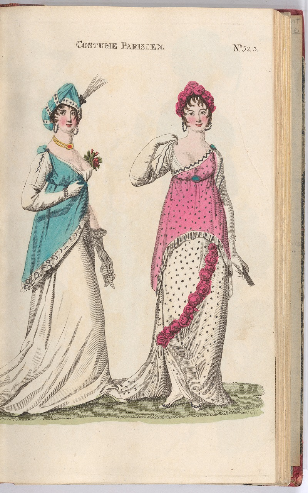
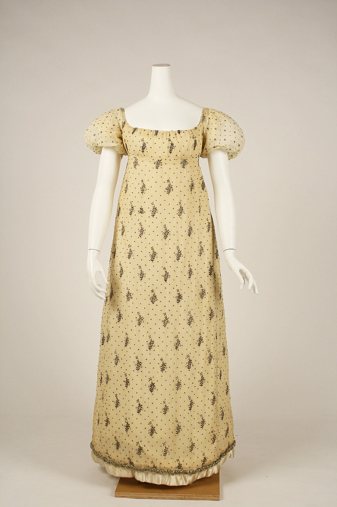
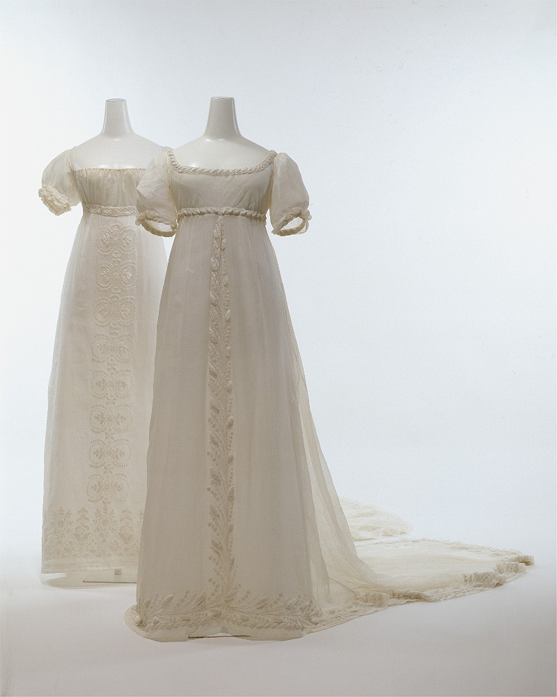

In order to create a recognisable 1810s silhoutte, I knew that I would need a pair of 1810s stays. Stays are similar to a corset, in that they are an undergarment designed to support and shape the bust, that was worn under the clothing and on top of a chemise. In the 1810s, the empire waist style was popular, and thus, these garments had no reason to shape the waist/hips or be tight laced. Rather, at this point in time, the purpose of the stays was to lift and separate the breasts, and create a symmetrical, rounded profile.
One of my favourite historical costume researchers/producers recommended this blog post on the construction of 1810s stays, which digitises a range of patterns that can be found in J.S. Bernhardt's book on the subject. J.S. Bernhardt was a tailor in the 19th century, and this blog post was written and researched by Sabine Schierhoff. Using real historical patterns is one way that reenactors can get closer to historical accuracy in their tailoring/dressmaking.
When it came to the cut, drape and weight of the dresses themselves, I looked to extant gowns that still exist, in particular, the Metropolitan Museum in New York has a beautiful collection, and I also looked to fashion plates and drawings from the time. My research shows flowing white gowns, with empire waist lines (a waist seam that sits just below the bust, rather than at the natural waist), short, puffed sleeves, and hems that reach to just above the ground.
click here to learn more



make space!